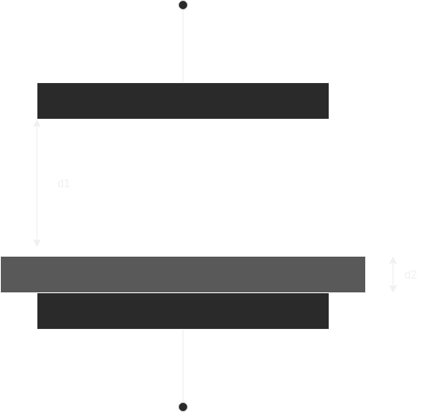

, а переменным параметром становится диэлектрическая проницаемость среды
, а переменным параметром становится диэлектрическая проницаемость среды  . Такая конструкция датчика используется для измерения толщины ленточных и листовых материалов, уровня жидких и сыпучих сред
. Такая конструкция датчика используется для измерения толщины ленточных и листовых материалов, уровня жидких и сыпучих средДо этого было ещё 40 минут лекции, но я опоздал
тут схема датчика давления - платина с обкладкой конденсатора прогибается, но сама обкладка не гнется - расстояние между обкладками меняется под давлением.
Наиболее часто расстояние между обкладками конденсатора под действием измеряемой величины находится в пределах 1мм. Если расстояние между обкладками и диэлектрическую проницаемость сохранять неизменными то получится другой тип емкостного датчика, а именно - с переменной величиной площади перекрытия пластин. Емкость такого датчика можно определить из следующего выражения
На базе датчика перемещения с переменной величиной площади перекрытия может быть реализован преобразователь угловых перемещений
Следующий вариант создания емкостного датчика заключается в сохранении значений и , а переменным параметром становится диэлектрическая проницаемость среды . Такая конструкция датчика используется для измерения толщины ленточных и листовых материалов, уровня жидких и сыпучих сред
эквивалентно 2-м конденсаторам, подключенным параллельно

Эквивалентно 2-м конденсаторам, подключенным последовательно
Задача
ескостной преобразователь
обкладки - полуокружности
измеряет угловые перемещения от до
радиус обкладок -  метров
метров
расстояние между обкладками - метра
определить угол если емкость пФ
 =
=  (воздух)
(воздух)
м^2